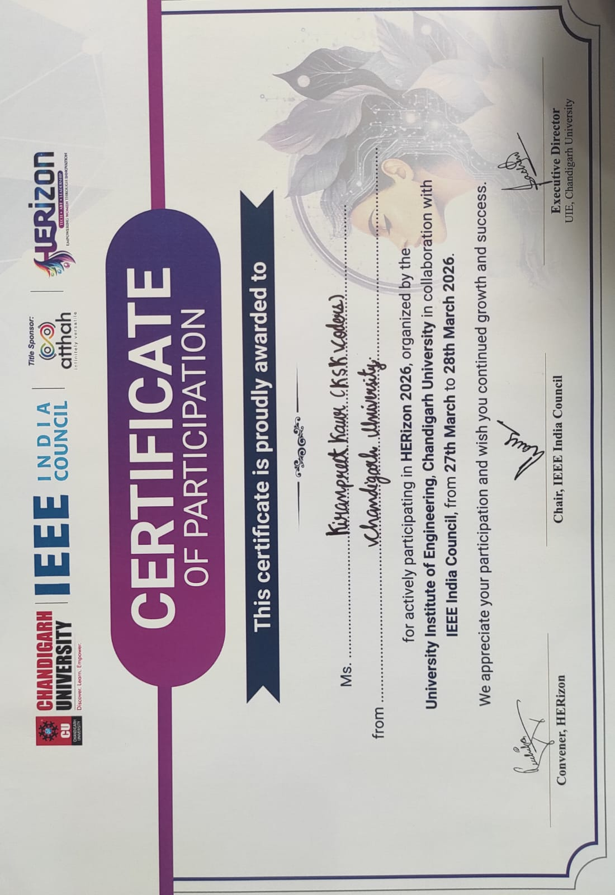
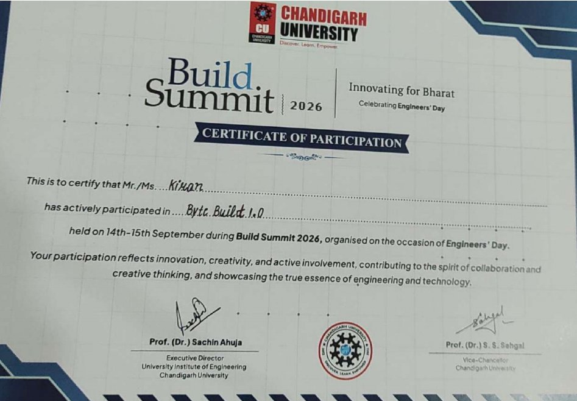
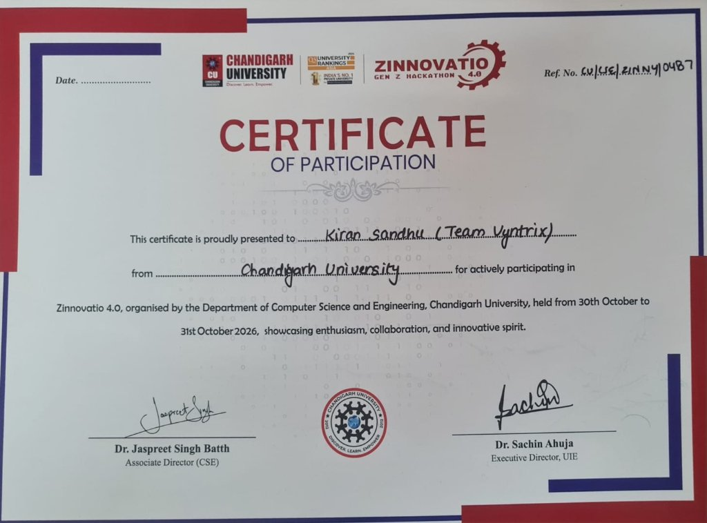

PORTFOLIO
Kiranpreet Kaur
B.Tech CSE (Artificial Intelligence)
KAUR
02 — ABOUT ME
Know me a little better.
Introduction
I am a Computer Science Engineering student specializing in Artificial Intelligence. I enjoy learning how software, programming, and AI algorithms can be engineered to solve practical problems.
Academic Interests
- Artificial Intelligence & Machine Learning
- Computer Organization & Architecture (COA)
- Programming & Problem Solving
- Data Structures and Algorithms
Future Goals
My goal is to build strong industry foundations in AI and software development by implementing hands-on projects, understanding low-level computer systems, and collaborating on innovative solutions.
CV / Resume
View or download my verified academic curriculum vitae and skill credentials.
03 — COA LEARNING
Number System Converter
Interactive tool for Decimal, Binary, Hexadecimal, and Octal conversions with instant validation.
04 — GITHUB & LIVE SIMULATOR
My Code Repository & Architecture Simulator
Interactive instruction set generator modeling 0, 1, 2, and 3 address architectures for Computer Organization & Architecture.
Instruction Set Simulator (COA)
An architecture simulation project implementing accumulator-based instruction execution, opcodes, register states, and memory cycles for Computer Organization & Architecture.
0, 1, 2 & 3 Address Instruction Simulator
Type any arithmetic expression below (or choose a preset) to automatically generate the complete assembly instruction sequence for 0-Address (Stack), 1-Address (Accumulator), 2-Address (Register-Memory), and 3-Address (General Register) machines.
Three-Address (Register)
Syntax: OP Dest, Src1, Src2
Two-Address (Register-Memory)
Syntax: OP Dest, Src (Dest ← Dest OP Src)
One-Address (Accumulator AC)
Syntax: OP Operand (AC ← AC OP M)
Zero-Address (Stack Architecture)
Syntax: OP (Implicit Top-of-Stack / TOS)
Comparative Architectural Trade-off Matrix
Analysis of instruction count, memory traffic, and instruction bit-width| Architecture | Implicit Working Operand | Instruction Count | Instruction Bit Size | Memory / Register Traffic | Key Architectural Trade-off |
|---|
05 — ACHIEVEMENTS & CERTIFICATIONS
Verified Certifications & Milestones
Industry-recognized cloud and AI certifications and student accomplishments.
Azure AI Fundamentals
Demonstrated fundamental knowledge of Machine Learning (ML) and Artificial Intelligence (AI) workloads and related Microsoft Azure cloud services.
Azure Fundamentals
Foundational-level understanding of cloud concepts, Azure architectural components, compute, networking, storage, security, and governance.

Hackathon & EventHerizon Event Certificate
Certificate of active participation in the Herizon technical symposium and collaborative student competition.

Hackathon & EventByte Build 1.0 Certificate
Active participation in Byte Build 1.0 during Build Summit 2026 at Chandigarh University on Engineers' Day, demonstrating innovation and collaborative technical problem solving.

Hackathon & EventZinnovatio 4.0 Hackathon
Certificate awarded to Kiran Sandhu (Team Vyntrix) for active participation in the Zinnovatio 4.0 Gen Z Hackathon organized by the Department of CSE, Chandigarh University.
06 — ASSIGNMENTS & CASE STUDY
Coursework & Case Study
Computer Organization & Architecture coursework deliverables, submissions, and research reports.
COA Assignment 1
Instruction Set Architecture & Simulator analysis submission document (PDF).
Case Study 4: CPU Pipelining and Performance Improvement
10 instructions · 5 pipeline stages · Ideal execution: 14 cycles · Speedup: ~3.57× (PDF).
07 — CONNECT
Get in touch.
Feel free to reach out for collaborations, project discussions, or academic inquiries.